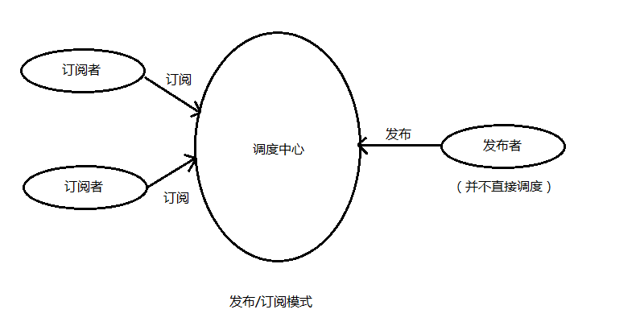

发布/订阅模式(Publish/Subscribe Pattern)
1. 什么是发布订阅模式
发布-订阅模式里面包含了三个模块，发布者，订阅者和调度中心。订阅者把自己想订阅的事件注册到调度中心，当发布者发布该事件）到调度中心，也就是该事件触发时，由调度中心统一调度订阅者注册到调度中心的处理代码。

2. 发布订阅模式与观察者模式的区别
观察者模式和发布订阅模式最大的区别就是发布订阅模式有个事件调度中心。观察者模式由具体目标调度，每个被订阅的目标里面都需要有对观察者的处理，发布订阅模式中统一由调度中心进行处理，订阅者和发布者互不干扰，消除了发布者和订阅者之间的依赖。这样一方面实现了解耦，还有就是可以实现更细粒度的一些控制。比如发布者发布了很多消息，但是不想所有的订阅者都接收到，就可以在调度中心做一些处理，类似于权限控制之类的。还可以做一些节流操作。
3. 发布订阅模式应用-node中Event模块
1
2
3
4
5
6
7
8
9
10
11
12
13
14
15
16
17
18
19
20
21
22
23
24
25
26
27
28
29
30
31
32
33
34
35
36
37
38
39
40
41
42
43
44
45
46
47
48
|
function EventEmitter(){
this._events = {}
}
EventEmitter.prototype.on = function (eventName, callback){
if(!this._events) this._events = {}
const callbacks = this._events[eventName] || [];
callbacks.push(callback)
this._events[eventName] = callbacks
}
EventEmitter.prototype.emit = function(eventName, ...args) {
if (!this._events) this._events = {}
let callbacks = this._events[eventName];
callbacks && callbacks.forEach(fn=>fn(...args))
}
EventEmitter.prototype.off = function(eventName, callback) {
if (!this._events) this._events = {}
this._events[eventName] && this._events[eventName].filter(fn => fn !== callback && fn.l !== callback)
}
EventEmitter.prototype.once = function (eventName, callback) {
const one = (...args)=>{
callback(...args)
this.off(eventName,one)
}
one.l = callback
this.on(eventName,one)
}
module.exports = EventEmitter
const EventEmitter = require('./event');
const events = new EventEmitter
const getUp = function(name){
console.log(name + '起床了')
}
events.on('getUp', getUp)
events.emit('getUp', 'zhangsan')
events.off('getUp', getUp)
events.emit('getUp', 'zhangsan')
|